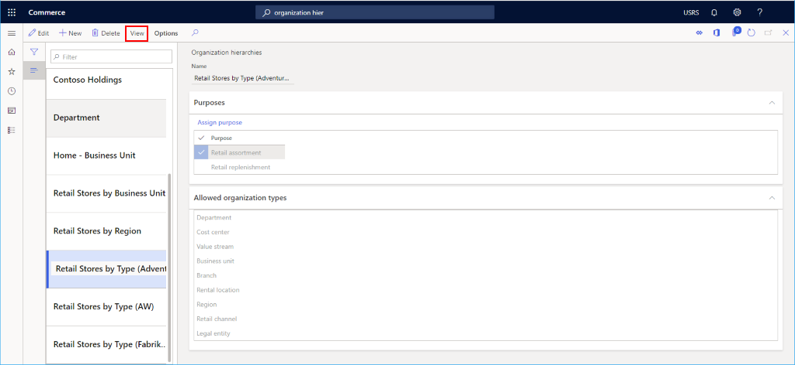
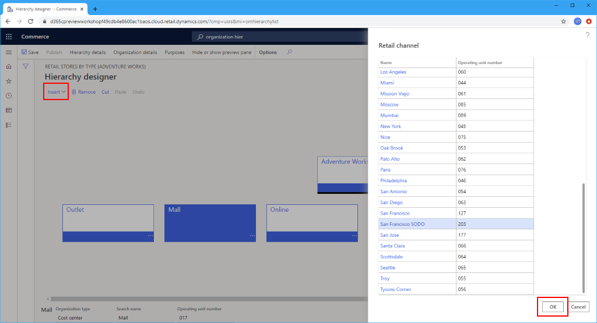
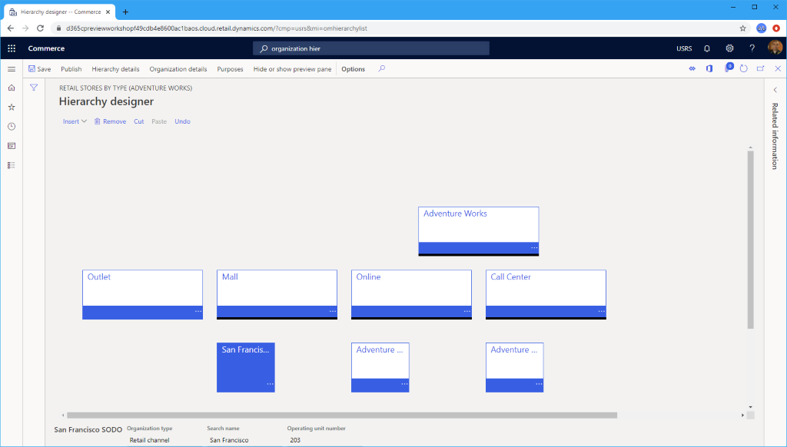

Einen Kanal zu einer Organisationshierarchie hinzufügen
Important
Dynamics 365 Retail ist jetzt Dynamics 365 Commerce und bietet umfassende Handelsfunktionen für alle Kanäle – von E-Commerce über Shops bis hin zu Callcentern. Weitere Informationen zu diesen Änderungen finden Sie unter Microsoft Dynamics 365 Commerce.
In diesem Thema wird beschrieben, wie ein Kanal zu einer Organisationshierarchie in Microsoft Dynamics 365 Commerce hinzugefügt wird.
Übersicht
Kanäle müssen einer oder mehreren Organisationshierarchien zugeordnet sein. Bevor Sie Kanäle erstellen, müssen Sie bestätigen, dass Ihre Organisationshierarchien eingerichtet wurden.
Siehe Organisationshierarchien für weitere Informationen zum Erstellen von Organisationshierarchien.
Wählen Sie eine Hierarchie aus
Gehen Sie folgendermaßen vor, um eine Hierarchie auszuwählen.
- Gehen Sie im Navigationsbereich zu Module > Retail und Commerce > Kanaleinrichtung > Organisationshierarchien.
- Wählen Sie aus der Liste die Organisationshierarchie aus, der Sie den Kanal hinzufügen möchten.
- Wählen Sie im Aktionsbereich Ansicht aus, um die Hierarchiedetails anzuzeigen.
Das folgende Bild zeigt Details zur Organisationshierarchie für die ausgewählte Hierarchie.

Einen Kanal zu einem Hierarchieknoten hinzufügen
Gehen Sie folgendermaßen vor, um einen Kanal zu einem Hierarchieknoten hinzuzufügen.
- Wählen Sie im Aktionsbereich Bearbeiten aus.
- Wählen Sie den Hierarchieknoten aus, zu dem der Kanal hinzugefügt werden soll, und klicken Sie dann auf Einfügen in der Dropdown-Liste, und wählen Sie Retail Channel aus.
- Wählen Sie den Kanal aus, den Sie hinzufügen möchten, und wählen Sie dann die Schaltfläche OK.
- Wählen Sie im Aktionsbereich Speichern aus.
- Wählen Sie im Aktionsbereich Veröffentlichen aus und geben Sie ein Datum des Inkrafttretens in der Vergangenheit an, um diese Aktion sofort in Kraft treten zu lassen.
Das folgende Bild zeigt, wie Sie einen Kanal auswählen, um ihn einem Hierarchieknoten hinzuzufügen.

Das folgende Bild zeigt eine Hierarchie mit verschiedenen hinzugefügten Kanälen.

Zusätzliche Ressourcen
Voraussetzungen der Kanaleinrichtung
Organisationen und Organisationshierarchien – Übersicht
Planen Ihrer Organisationshierarchie